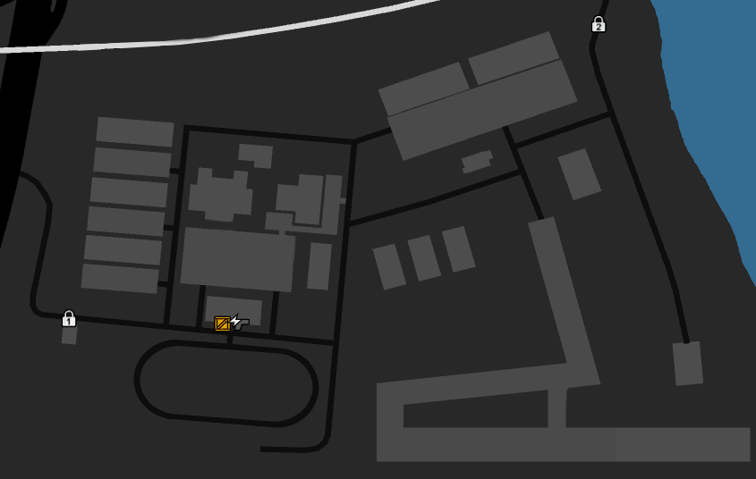

01
Карта
Карта объектов и порядок заступления на посты.
Единый справочник для новичков и действующих военнослужащих. Понятно, структурировано и без лишних сокращений.
Карта объектов и порядок заступления на посты.
Погоны, звания и информация о старшем составе армии.
Основные документы и правила службы, собранные в одном месте.
Пошаговый путь от новичка до следующего звания.
Звания расположены по порядку от 1 ранга до руководящего состава.
Место для фотографий и информации о руководстве армии.
Подразделения Вооружённых Сил РФ и Федеральной службы войск национальной гвардии.
Здесь будет размещено содержание и понятное объяснение правил.
ПРЕАМБУЛА
Настоящий Устав определяет права и обязанности военнослужащих Вооруженных Сил (ВС) и Федеральной службы войск национальной гвардии (ФСВНГ), порядок взаимодействия, обязанности должностных лиц и правила внутреннего порядка.
ГЛАВА I. ОБЩИЕ ПОЛОЖЕНИЯ
Статья 1.1. Соблюдение Устава — каждый военнослужащий обязан знать и соблюдать Устав; незнание не освобождает от ответственности.
Статья 1.2. Воинский долг — каждый военнослужащий обязан честно исполнять воинский долг, защищать национальные интересы и территориальную целостность РФ.
Статья 1.3. Исполнение приказов — законный приказ обязателен к исполнению; заведомо незаконный приказ не исполняется с докладом начальнику.
Статья 1.4. Репутация Армии — запрещены действия, наносящие ущерб репутации или подрывающие доверие к Армии.
Статья 1.5. Обращение по служебным вопросам — по служебным вопросам военнослужащий обращается к командиру своего подразделения.
Статья 1.6. Единоначалие — командир наделен властью и несет персональную ответственность за подразделение.
Статья 1.7. Построения — на построение являться точно в срок, кроме лиц, несущих службу на посту.
Статья 1.8. Набор — набор осуществляется через агитацию и призывы по утвержденному графику.
Статья 1.9. КМБ и Военная академия — КМБ проходит за 5 дней, Военная академия — за 10 дней; за провал — черный список на 14–90 дней.
Статья 1.10. Основания для увольнения — увольнение возможно по собственному желанию, за грубые нарушения, нарушение закона, по решению суда, за непрохождение КМБ/академии, за отсутствие более 48 часов, за нахождение без формы, за самовольное оставление части и по иным основаниям.
Статья 1.11. Военная присяга — каждый военнослужащий обязан принять присягу; отказ или грубое нарушение — основание для увольнения.
Статья 1.12. Сбережение имущества — запрещены порча, неаккуратное использование транспорта, утрата оружия и использование имущества в личных целях.
ГЛАВА II. РАСПОРЯДОК ДНЯ
Статья 2.1. Служебный день — с 11:00 до 21:30 ежедневно.
Статья 2.2. Перерыв — обед с 18:00 до 19:00 без оформления увольнительной.
Статья 2.3. Вызов на службу — военнослужащий может быть вызван из отгула, кроме отпуска в мирное время.
Статья 2.4. Вечерняя проверка — ежедневно в 21:00; постовые не покидают пост, подтверждают присутствие докладом.
Статья 2.5. Изменение графика — командир части вправе корректировать график приказом.
Статья 2.6. Увольнительное время и выход из части — рядовой и ефрейтор покидают часть только по увольнительной; младший сержант и выше могут получить 60 минут увольнительного времени в день и покидать часть после службы.
Статья 2.7. Отпуск — младший сержант и выше имеют право на отпуск до 7 дней раз в месяц.
Статья 2.8. Отдых в части — для отдыха используются казарма, раздевалка и медицинский блок.
Статья 2.9. Повышенная готовность — при Код-4 часть переходит в круглосуточный режим.
Статья 2.10. Плановый медицинский осмотр — проводится до вечерней проверки или после смены поста, назначается медротой.
ГЛАВА III. ВНЕШНИЙ ВИД И БЕЗОПАСНОСТЬ
Статья 3.1. Военная форма — в части и на официальных мероприятиях обязательна военная форма, соответствующая подразделению и званию.
Статья 3.2. Внешний вид — запрещены спортивная и пляжная одежда, яркие аксессуары, неопрятность и криминальная символика.
Статья 3.3. Обращение с оружием — оружие считать заряженным, не направлять на людей без необходимости, не держать палец на спусковом крючке до выстрела.
Статья 3.4. Бодикамеры — обязательны для ВП, ОСБ, КПП, патрулей и задержаний; при неисправности — доклад и запись в журнале.
ГЛАВА IV. СТРУКТУРА И ПОЛНОМОЧИЯ
Статья 4.1. Иерархия — Лидер Армии → Заместитель → Начальник ВС → Начальник ФСВНГ → командиры подразделений.
Статья 4.2. Должностные лица — Лидер осуществляет общее руководство, заместитель действует в пределах полномочий, начальники организуют работу подчинённых.
Статья 4.3. Подразделения — ВП, Медрота, ГРУ, ССО, МСК, ОСБ, РВО, ОМОН, Военная академия, Военный комиссариат выполняют задачи в пределах компетенции.
Статья 4.4. Зоны ответственности — Армия охраняет воинскую часть, комиссариат, полигон и иные объекты; самостоятельное назначение наказания гражданским не допускается.
Приложение: полномочия по взысканиям — командир подразделения: устное предупреждение, выговор; начальники ВС/ФСВНГ: строгий выговор, служебная проверка; Лидер Армии: понижение и увольнение.
ГЛАВА V. ВЗАИМОДЕЙСТВИЕ С ГРАЖДАНСКИМИ
Статья 5.1. Субординация — система иерархических отношений, уважения дисциплины и исполнения приказов.
Статья 5.2. Воинское приветствие — соблюдение правил приветствия и обращения к старшим по званию.
Статья 5.3. Действия в отношении граждан — военнослужащие вправе пресекать проникновение, задерживать и передавать ВП/МВД; самостоятельное наказание не допускается.
Статья 5.4. Применение силы — допускается при нападении, угрозе жизни, проникновении или задержании; после применения — медпомощь, доклад, фиксация на камеру, рапорт.
ГЛАВА VI. СЛУЖЕБНАЯ СВЯЗЬ
Статья 6.1. Теги подразделений — ВП, МР, ГРУ, ССО, МСК, ВК, ОСБ, РВО, ОМОН, КС; полковники и выше могут без тега.
Статья 6.2. Коды обстановки — Код-1: спокойно; Код-2: подозрительные лица; Код-3: проникновение или нападение; Код-4: боевая тревога.
ГЛАВА VII. РЕГЛАМЕНТ ДЕЙСТВИЙ
Статья 7.1.1. Специальные операции — загрузка и доставка груза без утрат; запрещены действия, мешающие безопасности.
Статья 7.1.2. Реакция на стрельбу — ССО, ГРУ и ОМОН — основные подразделения реагирования; при угрозе действовать в пределах обороны, докладывать, вызывать группу.
Статья 7.2. Военное положение — все действуют по распоряжениям Лидера и командования, используют боевую форму и занимают позиции.
Статья 7.3. Код-3 — получить обмундирование, доложить местоположение, направление и приметы нарушителя.
Статья 7.4. Обязанности постового — бдительно нести службу, требовать документы, не покидать пост, докладывать о нештатной ситуации.
Статья 7.5. Единый порядок инцидента — доклад, фиксация на камеру, ограничение доступа, вызов ВП, передача нарушителя, оформление рапорта.
ГЛАВА VIII. КАДРОВАЯ ОТЧЕТНОСТЬ
Статья 8.1. Отчеты — подаются по утвержденной форме; при ошибке создается новый отчет.
Статья 8.2. Повышения — для повышения не должно быть активных взысканий; по представлению командира.
Статья 8.2.5. Повышение на посту — военнослужащий на посту проходит повышение после сдачи поста или через представителя.
Статья 8.3. Повторный инструктаж — после нарушения правил требуется инструктаж или проверка знаний.
Устав утверждён: Командир части Вооружённых Сил Российской Федерации
Согласовано: Начальник Военной полиции, Начальник Штаба
Дата вступления в силу: 29.08.2026
Всего статей: 99 (включая общие положения и порядок применения)
Дисциплина, поощрения, взыскания и ответственность.
ПРЕАМБУЛА
Настоящий Устав определяет права и обязанности военнослужащих Вооруженных Сил (ВС) и Федеральной службы войск национальной гвардии (ФСВНГ), взаимоотношения между ними, обязанности основных должностных лиц и правила внутреннего порядка. Все военнослужащие, независимо от своих воинских званий и служебного положения, должны строго руководствоваться требованиями настоящего Устава.
ГЛАВА I. ОБЩИЕ ПОЛОЖЕНИЯ
Статья 1. Настоящий Дисциплинарный устав определяет виды дисциплинарных проступков, меры дисциплинарного взыскания, порядок их применения и исполнения, а также права и обязанности военнослужащих при привлечении к дисциплинарной ответственности.
Статья 2. Действие настоящего Устава распространяется на военнослужащих ВС и ФСВНГ.
Статья 3. Дисциплинарное взыскание применяется с целью восстановления воинской дисциплины, предупреждения повторных нарушений и воспитания личного состава.
Статья 4. Высшими надзорными органами внутри бригады является военная комендатура для корпуса ВС РФ и отдел собственной безопасности для ФСВНГ.
ГЛАВА II. ВИДЫ ДИСЦИПЛИНАРНЫХ ПРОСТУПКОВ И МЕРЫ ВЗЫСКАНИЯ
Нарушения воинской субординации
Статья 5. Неисполнение законного приказа начальника влечёт дисциплинарную ответственность. Неисполнение приказа в боевой обстановке, при тревоге или приказа непосредственного начальника является отягчающим обстоятельством.
Статья 7. Неподчинение законным требованиям сотрудника Военной полиции, ОСБ или иного уполномоченного органа влечёт дисциплинарную ответственность.
Статья 7.1. Оскорбление начальника. Статус потерпевшего и публичность являются отягчающими обстоятельствами.
Статья 7.2. Насилие в отношении начальника. Использование оружия и наступившие последствия являются отягчающими обстоятельствами.
Статья 7.3. Угроза начальнику. Угроза оружием или в боевой обстановке является отягчающим обстоятельством.
Статья 8. Неподчинение законным требованиям сотрудника Прокуратуры Отказ от выполнения законных требований сотрудников Прокуратуры Российской Федерации, данных в рамках исполнения ими надзорных функций. — наказывается выговором либо строгим выговором. При оказании сопротивления — увольнением из Вооружённых Сил Российской Федерации с передачей материалов в Прокуратуру.
Статья 9. Нарушение субординации Нарушение установленных правил воинского приветствия, обращения к старшему по званию, порядка доклада и рапорта, а также несоблюдение дистанции и формы общения, предусмотренных строевым уставом. — наказывается устным предупреждением либо выговором.
Статья 14. Оскорбление сослуживца, гражданского лица и нецензурная брань в строю Нанесение оскорбления сослуживцу, гражданскому лицу, задержанному или иному лицу в устной, письменной форме либо посредством жестов, унижающее их честь и достоинство. — наказывается устным предупреждением либо выговором. Оскорбление старшего по званию: — наказывается выговором либо строгим выговором. Использование нецензурной брани в строю, на официальных построениях, при исполнении служебных обязанностей, в общении с гражданскими лицами и представителями государственных органов: — наказывается устным предупреждением либо выговором. При систематических нарушениях — строгим выговором. Примечание: Использование нецензурной лексики в повседневном служебном общении вне строя и не в целях оскорбления конкретного лица дисциплинарной ответственности не влечёт. Данная норма введена с учётом специфики реальной армейской коммуникации и не является основанием для привлечения к ответственности при отсутствии умысла на оскорбление.
Статья 22. Нарушение формы одежды Ношение военной формы одежды с нарушением установленных правил: отсутствие положенных элементов обмундирования, нарушение порядка ношения знаков различия, шевронов, нагрудных знаков. — наказывается устным предупреждением либо выговором. Примечание: При умышленном искажении формы одежды в целях сокрытия принадлежности к определённому подразделению или званию — строгим выговором.
Нарушения правил поведения на службе
Статья 23. Нарушение правил ношения формы одежды вне службы Ношение военной формы одежды в местах и ситуациях, не связанных с исполнением служебных обязанностей, за исключением случаев, прямо предусмотренных настоящим уставом или приказами командования. — наказывается устным предупреждением либо выговором.
Статья 24. Хранение и употребление спиртных напитков или наркотических веществ: распитие, нахождение на службе в состоянии опьянения, хранение или употребление запрещённых веществ, а также отказ от освидетельствования. Нарушение на посту, в карауле или с оружием является отягчающим обстоятельством.
Статья 34. Самовольное оставление части - оставление территории части или места службы без законного основания и разрешения, если деяние не охвачено специальной статьёй настоящего Устава.
Статья 34.1. Опоздание или неявка на обязательное мероприятие, построение, занятие, наряд, патруль или медицинский осмотр без уважительной причины.
Статья 34.2. Уклонение от назначенной службы: оставление либо уклонение от наряда, поста, патруля, караула, занятия или построения.
Статья 45. Иное нарушение внутреннего распорядка, прямо не предусмотренное специальными статьями настоящего Устава.
Статья 47. Нарушение правил пожарной безопасности применяется только при реальной угрозе пожара, ущербе либо нарушении на складе, в оружейной комнате или ином опасном месте.
Статья 47.1. Нарушение правил хранения оружия, боеприпасов, специальных средств или военного имущества.
Статья 47.2. Нарушение правил обращения с оружием, боеприпасами или специальными средствами.
Статья 47.3. Передача оружия, боеприпасов, специальных средств или имущества без разрешения.
Статья 47.4. Утрата либо порча оружия, боеприпасов, специальных средств или военного имущества. Ущерб, угроза жизни и утрата оружия являются отягчающими обстоятельствами.
Статья 56. Хищение военного имущества Хищение военного имущества в любой форме: кража, грабёж, разбой, мошенничество, присвоение или растрата. — наказывается увольнением из Вооружённых Сил Российской Федерации с передачей материалов в следственные органы.
Иные нарушения
Статья 57. Порочение чести и достоинства военнослужащего - аморальное поведение без публичной дискредитации Вооружённых Сил.
Статья 58. Дискредитация Вооружённых Сил. Публичность, распространение в социальных сетях или СМИ, а также существенный репутационный ущерб являются отягчающими обстоятельствами.
Статья 59. Разглашение охраняемой информации: военной, служебной или государственной тайны, доступ к которой получен в связи со службой.
Статья 59.1. Использование служебной информации в личных целях.
Статья 62. Статья применяется только к нарушениям, которые не охвачены другими статьями Устава. Взыскание назначается только из закрытого перечня дисциплинарных взысканий с письменным указанием обстоятельств нарушения.
ГЛАВА III. ДОПОЛНИТЕЛЬНЫЕ ДИСЦИПЛИНАРНЫЕ ПРОСТУПКИ
Преступления против воинской службы
Статья 65. Неуставные взаимоотношения между военнослужащими Унижение чести и достоинства военнослужащих младших по званию, принуждение их к действиям, не связанным с исполнением служебных обязанностей, вымогательство денежных средств, имущества или услуг. — наказывается выговором либо строгим выговором. Примечания: 1. При наличии признаков уголовного преступления (вымогательство, побои, истязание) материалы передаются в следственные органы. 2. Ответственность несут как непосредственные исполнители, так и военнослужащие, знавшие о фактах неуставных взаимоотношений и не сообщившие о них командованию.
Статья 66. Неоказание помощи сослуживцу Неоказание помощи сослуживцу, находящемуся в опасном для жизни или здоровья состоянии, а равно несообщение о таком состоянии командованию или в медицинские службы при наличии реальной возможности оказать помощь или сообщить. — наказывается выговором либо строгим выговором. Примечание: Если бездействие повлекло тяжкие последствия (смерть, тяжкий вред здоровью, крупный материальный ущерб) — увольнением из Вооружённых Сил Российской Федерации с рассмотрением вопроса о возбуждении уголовного дела.
Статья 67. Фальсификация служебных документов Подделка, фальсификация или умышленное искажение служебных документов (рапортов, журналов учёта, протоколов, актов, медицинских справок), в том числе удаление, изменение или дописывание записей в журналах учёта увольнительных, нарядов, патрулей и иных служебных реестров, а равно использование заведомо подложных документов. — наказывается выговором и понижением в должности. Примечания: 1. При совершении деяния офицерским составом — увольнением из Вооружённых Сил Российской Федерации с передачей материалов в следственные органы. 2. Соучастие в фальсификации (помощь в подделке, сокрытие факта подлога) наказывается наравне с основным нарушителем.
Статья 68. Конфликт интересов Принятие служебных решений в отношении близких родственников либо лиц, с которыми имеются личные, имущественные или иные заинтересованные отношения, без уведомления об этом непосредственного командира. — наказывается выговором. Примечания: 1. При сокрытии конфликта интересов, повлёкшем ущерб для службы, — увольнением из Вооружённых Сил Российской Федерации. 2. Военнослужащий обязан заявить самоотвод при наличии обстоятельств, вызывающих обоснованное сомнение в его беспристрастности. 3. К близким родственникам относятся: супруги, родители, дети, братья, сёстры, дедушки, бабушки, внуки.
Статья 69. Ложный донос и клевета на сослуживца Распространение заведомо ложных сведений, порочащих честь и достоинство сослуживца, а равно подача заведомо ложных рапортов и жалоб с целью причинения вреда другому военнослужащему. — наказывается выговором либо строгим выговором. Примечания: 1. При совершении деяния офицерским составом или при причинении существенного вреда репутации, здоровью или карьере оклеветанного лица — увольнением из Вооружённых Сил Российской Федерации с передачей материалов в следственные органы. 2. Добросовестное заблуждение относительно сообщаемых сведений не образует состава настоящего проступка.
Статья 70. Нарушения, связанные с увольнительным временем 70.1. Просрочка увольнительного времени без уважительной причины: - до 15 минут — устное предупреждение; - от 15 до 60 минут — выговор; - свыше 60 минут — квалифицируется как самовольное оставление части в соответствии со статьёй 34 настоящего устава. 70.2. Использование увольнительного времени для совершения правонарушения либо для встреч с лицами, подозреваемыми в криминальной деятельности — наказывается выговором. При совершении тяжкого преступления — увольнением из Вооружённых Сил Российской Федерации. 70.3. Командир подразделения вправе лишить военнослужащего права на увольнительное время сроком до 3 суток при наличии следующих оснований: - непогашенный выговор; - статус подозреваемого по уголовному делу. Решение оформляется рапортом с указанием оснований и срока. 70.4. Дежурному по контрольно-пропускному пункту ненадлежащим образом вести журнал учёта увольнительных, не фиксировать выходы и возвращения военнослужащих, а равно выпускать военнослужащих без надлежаще оформленной увольнительной — наказывается выговором. При систематических нарушениях — понижением в должности. Ограничение увольнительного времени является временной режимной мерой, а не дисциплинарным взысканием; оно назначается с указанием срока, причины и возможности обжалования.
Статья 71. Воспрепятствование деятельности государственных органов применяется только при активном воспрепятствовании: угрозе, насилии, сокрытии нарушителя или уничтожении доказательств.
Статья 73. Халатностью признаётся неисполнение обязанностей по небрежности, если деяние не охвачено специальной статьёй настоящего Устава.
Статья 74. Связи с криминальными структурами Поддержание связей с членами криминальных организаций, участие в их мероприятиях, оказание содействия в их деятельности либо получение от них услуг и материальных благ. — наказывается понижением в должности либо увольнением из Вооружённых Сил Российской Федерации.
Статья 75. Превышение служебных полномочий - совершение должностным лицом действия в пределах служебной сферы, но за пределами предоставленных ему прав.
Статья 77. Нарушение установленных правил поведения на плацу воинской части: нахождение в неформальном виде, с расстегнутым обмундированием, без головного убора (кроме установленных случаев), приём пищи, курение, громкие разговоры, использование средств связи, занятие деятельностью, не связанной со строевой подготовкой и официальными мероприятиями. — наказывается устным предупреждением либо выговором/строгим выговором. Примечание: во время проведения построения при наличии сформированного строя передвижение бегом по плацу не допускается, за исключением случаев исполнения команды либо распоряжения командования.
Статья 78. Нарушение порядка в местах отдыха и казарменных помещениях Нарушение установленного распорядка в казармах и местах отдыха: шум в период тихого часа и после отбоя, громкое воспроизведение музыки и иных звуков, нарушение чистоты и санитарных норм, порча казённого имущества, приведение в жилые помещения посторонних лиц без разрешения командования. — наказывается устным предупреждением либо выговором.
Статья 79. Курение и использование электронных устройств для курения в неположенном месте. При реальной угрозе пожара, ущербе или нарушении на опасном объекте применяется статья о пожарной безопасности.
Статья 80. Гражданская одежда в части для полковника и выше допускается только с разрешения Лидера Армии.
Статья 81. Неуважение к государственным символам и воинским ритуалам Проявление неуважения к государственным символам Российской Федерации (флагу, гербу, гимну), а также к воинским ритуалам и церемониям: неснятие головного убора при исполнении гимна, продолжение разговоров, сидение, пользование средствами связи, иное демонстративное пренебрежение. — наказывается выговором. Примечание: При публичном осквернении или надругательстве над государственными символами — увольнением из Вооружённых Сил Российской Федерации с передачей материалов в следственные органы.
Статья 82. Недонесение о готовящемся или совершённом преступлении Достоверное знание о готовящемся или совершённом преступлении, представляющем угрозу жизни, здоровью или безопасности личного состава и воинской части, и несообщение об этом командованию, Военной полиции, ОСБ или иным уполномоченным органам при наличии реальной возможности это сделать. — наказывается выговором. Примечания: 1. При сокрытии тяжкого или особо тяжкого преступления — увольнением из Вооружённых Сил Российской Федерации с передачей материалов в следственные органы. 2. Не подлежат ответственности за недонесение супруг (супруга) и близкие родственники лица, совершившего преступление, за исключением преступлений против основ конституционного строя и безопасности государства.
Статья 83. Нарушение пропускного и внутриобъектового режима. Неправильное ведение журналов КПП и поста является самостоятельной частью данного нарушения.
Статья 84. Азартные игры и пари на территории воинской части Организация или участие в азартных играх, пари, ставках и иных формах денежных рискованных соглашений на территории воинской части, а равно выступление в качестве посредника или организатора таких мероприятий. — наказывается выговором либо строгим выговором. Примечание: При организации игр с извлечением прибыли, при вовлечении младших по званию или при причинении существенного материального ущерба участникам — увольнением из Вооружённых Сил Российской Федерации.
Статья 85. Самоуправство - совершение лицом действия, на которое оно вообще не имело полномочий.
Статья 87. Использование служебного положения в личных целях Использование служебного положения, служебных полномочий или доступа к служебной информации в целях личной выгоды, а равно получение материальных благ, услуг или вознаграждений за совершение или несовершение действий по службе. — наказывается увольнением из Вооружённых Сил Российской Федерации с передачей материалов в Военную прокуратуру и ФСБ для рассмотрения вопроса о возбуждении уголовного дела.
Статья 89. Въезд, передвижение и парковка личного транспорта на территории части осуществляются только в порядке, установленном Караульным уставом. Нарушение маршрута, въезд через неразрешённый КПП или использование незарегистрированного транспорта влечёт дисциплинарную ответственность.
Статья 90. Нарушение установленного позывного в служебной связи Использование в официальных каналах связи Вооружённых Сил Российской Федерации (включая радиосвязь, специализированные служебные каналы оперативной коммуникации) позывных, не соответствующих установленным командованием, а также личных, шуточных, нецензурных или иным образом нарушающих регламент связи идентификаторов. — наказывается выговором. Примечания: 1. При повторном нарушении либо при срыве боевой задачи или оперативного мероприятия из-за невозможности идентификации военнослужащего — увольнением из Вооружённых Сил Российской Федерации. 2. Каждый военнослужащий обязан использовать только утверждённый позывной, соответствующий его должности и званию, при выходе в официальные каналы связи.
Статья 91. Отсутствие в системе служебной связи после заключения контракта влечёт ответственность только при доказанном умышленном уклонении от связи, повторности либо срыве операции.
Статья 92. Нарушение порядка служебной связи: использование неустановленного позывного, игнорирование обязательных служебных сообщений, передача недостоверной служебной информации и иные конкретно определённые нарушения правил связи.
ГЛАВА IV. МЕРЫ ДИСЦИПЛИНАРНОГО ВЗЫСКАНИЯ И СИСТЕМА ВЫГОВОРОВ
Статья 93. Виды дисциплинарных взысканий За совершение дисциплинарного проступка к военнослужащему могут быть применены исключительно следующие меры дисциплинарного взыскания: 1. Устное предупреждение; 2. Выговор; 3. Строгий выговор; 4. Понижение в должности; 5. Увольнение из Вооружённых Сил Российской Федерации. Примечание: Применение иных мер дисциплинарного воздействия, не предусмотренных настоящей статьёй, не допускается.
Статья 94. Наличие двух или трёх действующих взысканий является основанием для рассмотрения вопроса о понижении или увольнении, но решение принимается с учётом тяжести нарушений, поведения военнослужащего и результатов служебной проверки.
Статья 95. Порядок наложения дисциплинарного взыскания 95.1. Мера дисциплинарного взыскания избирается с учётом характера совершённого проступка, обстоятельств его совершения, степени вины, личности нарушителя, его предыдущего поведения и отношения к службе. 95.2. Дисциплинарное взыскание налагается непосредственным начальником в пределах его компетенции. При необходимости применения мер взыскания, превышающих компетенцию непосредственного начальника, он представляет рапорт вышестоящему командиру. 95.3. Увольнение из Вооружённых Сил Российской Федерации применяется по решению командира бригады и выше, если иное не предусмотрено настоящим уставом. 95.4. Дисциплинарное взыскание должно быть наложено не позднее 3 суток со дня обнаружения проступка, не считая времени служебной проверки, болезни военнослужащего или его нахождения в отпуске. 95.5. За каждый дисциплинарный проступок может быть наложено только одно дисциплинарное взыскание.
ГЛАВА V. ПОРЯДОК ПРИМЕНЕНИЯ УСТАВА
Статья 96. Настоящий Дисциплинарный устав вступает в силу с момента утверждения и обязателен для исполнения всеми военнослужащими Вооружённых Сил Российской Федерации.
Статья 97. Изменения и дополнения в настоящий устав вносятся по представлению Начальника Военной полиции и утверждаются приказом командира бригады.
Статья 98. Толкование положений настоящего устава даётся Штабом Вооружённых Сил Российской Федерации по запросам командиров подразделений.
Статья 99. Во всех случаях, когда положения настоящего устава допускают неоднозначное толкование, толкование производится в пользу военнослужащего, за исключением случаев, прямо предусмотренных уставом.
Устав утверждён: Командир части Вооружённых Сил Российской Федерации
Согласовано: Начальник Военной полиции, Начальник Штаба
Дата вступления в силу: 29.08.2026
Всего статей: 99 (включая общие положения и порядок применения)
Организация и порядок несения караульной службы.
ПРЕАМБУЛА
Настоящий Устав определяет права и обязанности военнослужащих Вооруженных Сил (ВС) и Федеральной службы войск национальной гвардии (ФСВНГ), взаимоотношения между ними, обязанности основных должностных лиц и правила внутреннего порядка. Все военнослужащие, независимо от своих воинских званий и служебного положения, должны строго руководствоваться требованиями настоящего Устава.
ГЛАВА I. ОБЩИЕ ПОЛОЖЕНИЯ
Статья 1. Настоящий Устав определяет предназначение, порядок организации и несения караульной службы, права и обязанности военнослужащих, несущих караульную службу, а также для регламентирует порядок несения постовой службы военнослужащих ВС РФ, а так же ФСВНГ.
Статья 2. Настоящим Уставом руководствуются все военнослужащие органов военного управления, воинских частей, органов военной полиции,федеральной службы войск национальной гвардии и лица гражданского персонала Вооруженных Сил Российской Федерации, замещающие воинские должности.
Статья 3. Караульная служба предназначена для надежной охраны и обороны боевых знамен, хранилищ (складов) с вооружением, военной техникой, другим военным имуществом, объектов Вооруженных Сил Российской Федерации и иных военных и государственных объектов, а также для охраны военнослужащих, содержащихся на гауптвахте и в дисциплинарной части.
Статья 4. Руководство караульной службой внутренних караулов воинский частей осуществляют командиры этих частей и их прямые начальники.
Статья 5. Приказы и распоряжения Министра обороны командующих территориальными воинскими формированиями по организации и несению караульной службы обязательным для выполнения подведомственными воинскими формированиями, их военнослужащими и иными должностными лицами, входящими в состав конкретного субъекта.
Статья 6. Командующие воинскими формированиями обязаны периодически проверять качество несения караульной службы на подведомственных субъектах.
Статья 7. При расположении войск в полевых условиях мероприятия по поддержанию воинской дисциплины, охране субъектов воинских частей и военных объектов проводятся в соответствии с Уставами воинских формирований Вооруженных Сил Российской Федерации и настоящим Уставом.
Статья 8. Непосредственное выполнение задач караульной службы осуществляется подразделениями воинских частей, отделом собственной безопасности а также военной комендатурой в пределах компетенции, определенной настоящим Уставом и Уставами конкретных воинских формирований.
Статья 9. Каждый военнослужащий обязан оказывать требуемую помощь лицам, несущим караульную службу.
Статья 10. Каждый военнослужащий обязан знать в лицо своего командира или зам командира
Статья 11. Военнослужащий, заметив нарушение правил несения службы кем-либо из состава наряда, караула, обязан немедленно сообщить об этом дежурному по части, в орган военной полиции или отдел собственной безопасности и доложить непосредственному командиру (начальнику).
Статья 12. Начальником караульной службы является командир части либо назначенное приказом должностное лицо.
Статья 13. К постоянным караулам относятся караулы, перечень которых определяется настоящим Уставом и караульная служба на которых осуществляется непрерывно без необходимости оформления сопроводительных документов или письменных и(или) устных распоряжений на организацию и осуществление караулов.
Статья 14. Временные караулы создаются приказами командиров воинских частей (формирований) либо приказом (указом) Министра обороны Российской Федерации, Премьер-министра и иными должностными лицами, которым предоставлено такое право в соответствии с действующим законодательством Российской Федерации.
Статья 15. Перечень постоянных караулов на территории Московской области: воинская часть ; территориальные военные объекты материального снабжения, склады с вооружением, стоянки военной техники, объекты стратегического (военного) значения; военный комиссариат Московской области, пункты отборы; государственные объекты материального снабжения.
Статья 16. Порядок несения караульной службы, перечень постов в караулах и порядок посещения указанных в статье 13 территорий, определяется настоящим Уставом.
Статья 17. Порядок несения караульной службы и перечень постов в караулах на объектах материального снабжения и объекта стратегического значения защищен Федеральным законом "О государственной тайне" и устанавливается исключительно приказами командиров (начальников) воинских формирований в соответствии с подведомственностью.
Статья 18. Каждый из перечисленных в статье 13 настоящего Устава объект охраняется Вооруженными Силами Российской Федерации. 18.1 Военные склады материального снабжения, склады с вооружением, стоянки военной техники, объекты стратегического (военного) значения, территории воинских частей являются закрытыми для свободного посещения и нахождения. Порядок прохода и пребывания на указанных территориях определяется Федеральным законом "О государственной собственности, закрытых и охраняемых территориях" и Федеральным законом "О Вооруженных Силах Российской Федерации" . 18.2 Нахождение на иных территориях, не перечисленных в части 1 статьи 16 настоящего Устава, не ограничивается при соблюдении установленных правил поведения, за исключением обстоятельств, определяемых действующим законодательством.
Постовая служба в караулах
Статья 19. Заступить на постовую службу в караулах может любой военнослужащих со звания Рядовой
Статья 20. Перечень постов в каждом из постоянных караулов определяется настоящим Уставом, может дополняться и корректироваться в связи с определенными обстоятельствами приказами командиров воинских частей (формирований), Министра обороны Российской Федерации.
Статья 21. Перечень постов во временно организуемых караулах определяется соответствующим приказом (указом) командиров (начальников), Министра обороны Российской Федерации, Премьер-министра, иных должностных лиц в пределах компетенции.
Статья 22. Перечень постов в карауле на территории воинской части: контрольно-пропускной пункт №1 (главный КПП); контрольно-пропускной пункт №2 (запасной КПП); вышки №1 - №8 по периметру воинской части; главный склад; военный полигон.
Статья 23. Перечень постов в карауле на территории военного комиссариата, пунктов отбора: главный вход; призывной кабинет; дежурный пост.
Статья 24. Численность военнослужащих одновременно несущих караульно-постовую службу на территории воинской части устанавливается внутренними актами и должностными регламентами
Статья 25. Старший наряда назначается приказом. Старшинство по званию применяется только при отсутствии назначенного старшего наряда.
Статья 26. При приеме и сдаче поста проверяются оружие, средства связи, состояние охраняемого объекта, наличие происшествий и замечаний. Смена фиксируется докладом в рацию.
Статья 27. Бодикамера обязательна для сотрудников ВП, ОСБ, военнослужащих на КПП, патрулей и лиц, проводящих задержание. При неисправности камеры военнослужащий докладывает старшему и фиксирует обстоятельства в журнале.
Статья 28. При заступлении на пост, каждый военнослужащий обязан предварительно провести проверку табельного оружия и средств радиосвязи на предмет их исправности. При обнаружении неисправности в работе, принять меры по устранению поломки либо заменить на исправные.
Статья 29. При несении постовой службы запрещается: терять концентрацию, отвлекаться на телефон и иные электронные средства, на разговоры; оставлять вооружение без контроля, снимать его с плеча без необходимости привести его в боевую готовность; нарушать действующее законодательство, особенно в области этики; игнорировать запросы о состоянии поста в рацию; своевременно не докладывать о состоянии поста; нарушать требования настоящего Устава в области организации пропуска на территорию и с территории объекта; бездействовать при совершении преступлений и(или) правонарушений на подведомственных территориях; бездействовать при просьбе оказания помощи гражданам и сотрудникам в пределах компетенции.
Статья 30. Обязанности военнослужащих, несущих постовую службу на КПП №1: постовой проверяет документы водителя, номер автомобиля, цель въезда и наличие записи в журнале транспортных средств. При отказе от предусмотренной проверки въезд не допускается. Полковники и выше проходят без оформления увольнительной, но предъявляют служебное удостоверение. Постовой также проверяет документы прибывающих лиц, докладывает о нарушениях, пресекает незаконное проникновение в пределах полномочий и своевременно докладывает о состоянии поста.
Статья 31. КПП №2 является резервно-служебным. Он используется для колонн снабжения, призывных колонн, служебного транспорта, патрулей и правительственных кортежей только при закрытии КПП №1 либо по отдельному приказу командования.
Статья 32. Обязанности военнослужащих на КПП №2 аналогичны обязанностям на КПП №1 и выполняются только в период законного использования КПП №2.
Статья 33. На территорию воинской части запрещается въезд на личных транспортных средствах, не зарегистрированных в установленном порядке в журнале транспортных средств. Регистрацию автомобиля санкционируют командиры ВП и ОСБ в пределах полномочий.
Статья 33.2. Въезд личного транспорта военнослужащих и гражданских лиц допускается исключительно через КПП №1. КПП №2 не используется для въезда личного транспорта.
Статья 33.3. Личный транспорт допускается при наличии записи в журнале транспортных средств и подтвержденной цели въезда.
Статья 33.4. После въезда личный транспорт следует по утвержденному маршруту на выделенную парковочную зону. Сквозной проезд по территории части, остановка у штаба, складов, казарм, автопарка, постов и иных режимных объектов запрещены.
Статья 33.5. Выезд личного транспорта производится через КПП №1. Допуск автомобиля может быть приостановлен или отменен при отсутствии транспортного средства в журнале.
Статья 34. Разовые пропуска на территорию части уполномочены оформлять командиры военной полиции и руководство вооруженных сил.
Статья 35. Военнослужащим несущим постовую службу на контрольно-пропускном пункте №1 и контрольно-пропускном пункте № 2 запрещается : 1. Спать, сидеть и прислоняться к чему-либо. 2. Читать, писать, петь. 3. Есть, пить и курить. 4. Принимать от кого бы то ни было и передавать кому-либо любые предметы. 5. Справлять естественные надобности на посту. 6. Досылать патрон в патронник без необходимости, как и доставать оружие без необходимости. 7. Использовать средства личной связи.
Статья 36. Режимным объектом является территория внутри периметра части, доступ к которой осуществляется через КПП №1 и КПП №2. Территория с внешней стороны КПП режимным объектом не является. За пределами режимного объекта военнослужащие действуют в пределах закона и при необходимости вызывают компетентные органы.
Устав утверждён: Командир части Вооружённых Сил Российской Федерации
Согласовано: Начальник Военной полиции, Начальник Штаба
Дата вступления в силу: 29.08.2026
Всего статей: 99 (включая общие положения и порядок применения)
Пошаговый гайд: подготовка → заступление → несение службы → смена поста.
Интерактивная карта с основными объектами. Наведите на метку для информации.
